Data Visualization¶
Autoprot Visualisation Functions.
@author: Wignand
@documentation: Julian
- autoprot.visualization.BHplot(df, ps, adj_ps, title=None, alpha=0.05, zoom=20)[source]¶
Visualize Benjamini Hochberg p-value correction.
- Parameters
df (pd.DataFrame) – Dataframe with p values.
ps (str) – Colname of column with p-values.
adj_ps (str) – column with adj_p values.
title (str, optional) – Plot title. The default is None.
alpha (flaot, optional) – The significance level drawn in the plot. The default is 0.05.
zoom (int, optional) – Zoom on the first n points. The default is 20.
- Return type
None.
Examples
The function generates two plots, left with all datapoints sorted by p-value and right with a zoom on the first 6 values (zoom=7). The grey line indicates the provided alpha level. Values below it are considered significantly different.
>>> autoprot.visualization.BHplot(phos,'pValue_TvC', 'adj.pValue_TvC', alpha=0.05, zoom=7)
(Source code, png, hires.png, pdf)
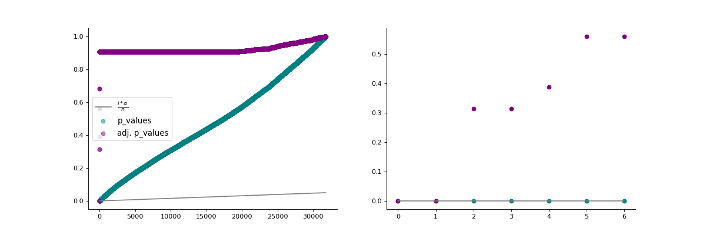
{kind=link}
{kind=link}
- autoprot.visualization.MAPlot(df, x, y, interactive=False, fct=None, title='MA Plot', figsize=(6, 6), hover_name=None)[source]¶
Plot log intensity ratios (M) vs. the average intensity (A).
Notes
The MA plot is useful to determine whether a data normalization is needed. The majority of proteins is considered to be unchanged between between treatments and thereofore should lie on the y=0 line. If this is not the case, a normalisation should be applied.
- Parameters
df (pd.dataFrame) – Input dataframe with log intensities.
x (str) – Colname containing intensities of experiment1.
y (str) – Colname containing intensities of experiment2.
interactive (bool, optional) – Whether to return an interactive plotly plot. The default is False.
fct (numeric, optional) – The value in M to draw a horizontal line. The default is None.
title (str, optional) – Title of the figure. The default is “MA Plot”.
figsize (tuple of int, optional) – Size of the figure. The default is (6,6).
hover_name (str, optional) – Colname to use for labels in interactive plot. The default is None.
- Return type
None.
Examples
The MA plot allows to easily visualize difference in intensities between experiments or replicates and therefore to judge if data normalisation is required for further analysis. The majority of intensities should be unchanged between conditions and therefore most points should lie on the y=0 line.
>>> autoprot.visualization.MAPlot(prot, twitch, ctrl, fct=2,interactive=False)
(Source code, png, hires.png, pdf)
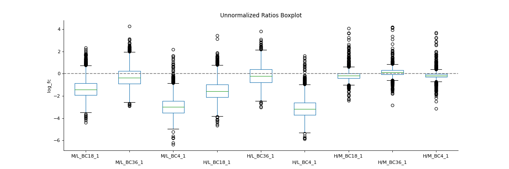If this is not the case, a normalisation using e.g. LOESS should be applied
>>> autoprot.visualization.MAPlot(prot, twitch, ctrl, fct=2,interactive=False)
(Source code, png, hires.png, pdf)
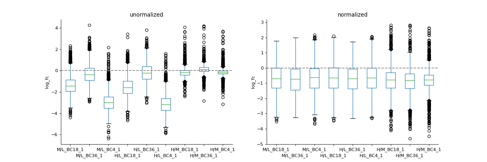
{kind=link}
{kind=link}
{kind=link}
{kind=link}
- autoprot.visualization.boxplot(df, reps, title=None, labels=[], compare=False, data='logFC', file=None, retFig=False, figsize=(15, 5), **kwargs)[source]¶
Plot intensity boxplots.
- Parameters
df (pd.Dataframe) – INput dataframe.
reps (list of str) – Colnames of replicates.
title (str, optional) – Title of the plot. The default is None.
labels (list of str, optional) – List with labels for the axis. The default is [].
compare (bool, optional) – If False reps is expected to be a single list, if True two list are expected (e.g. normalized and non-normalized Ratios). The default is False.
data (str, optional) – Either “logFC” or “Intensity”. The default is “logFC”.
file (str, optional) – Path to a folder where the figure should be saved. The default is None.
retFig (bool, optional) – Whether to return the figure object. The default is False.
figsize (tuple of int, optional) – Figure size. The default is (15,5).
**kwargs – Passed to pandas boxplot.
- Raises
ValueError – If the reps input does not match the compare setting.
- Returns
fig – Plot figure object.
- Return type
plt.figure
Examples
To inspect unnormalised data, you can generate a boxplot comparing the fold-change differences between conditions or replicates
>>> autoprot.visualization.boxplot(df=prot,reps=protRatio, compare=False, ... labels=labels, title="Unnormalized Ratios Boxplot", ... data="logFC")
(Source code, png, hires.png, pdf)
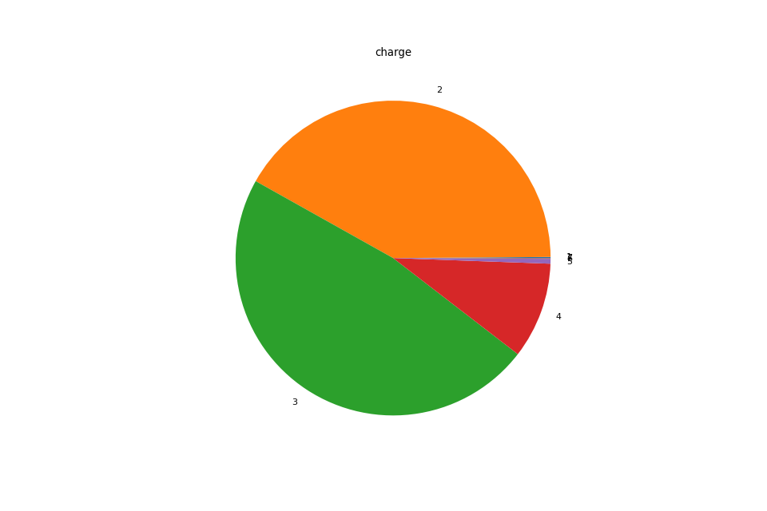If you have two datasets for comparison (e.g. normalised and non-normalised) fold-changes, you can use boxplot to plot them side-by-side.
>>> vis.boxplot(prot,[protRatio, protRatioNorm], compare=True, labels=labels, ... title=["unormalized", "normalized"], data="logFC")
(Source code, png, hires.png, pdf)
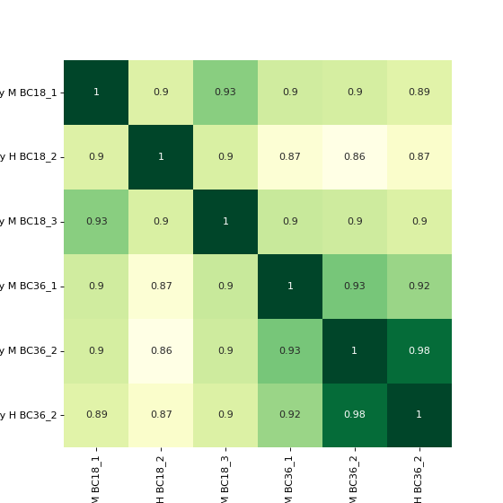
{kind=link}
{kind=link}
{kind=link}
{kind=link}
- autoprot.visualization.chargePlot(df, figsize=(12, 8), typ='bar', retFig=False, ax=None)[source]¶
Plot a pie chart of the peptide charges of a phospho(STY) dataframe.
- Parameters
df (pd.Dataframe) – Input dataframe. Must contain a column named “Charge”.
figsize (tuple of int, optional) – The size of the figure. The default is (12,8).
typ (str, optional) – “pie” or “bar”. The default is “bar”.
retFig (bool, optional) – Whether to return the figure. The default is False.
ax (matplotlib axis) – Axis to plot on
- Returns
fig – The figure object.
- Return type
matplotlib.figure
Examples
Plot the charge states of a dataframe.
>>> autoprot.visualization.chargePlot(phos, typ="pie") charge [total] - (count / # charge) [(44, 1), (20583, 2), (17212, 3), (2170, 4), (61, 5), (4, 6)] Percentage of charge [total] - (% / # charge) [(0.11, 1), (51.36, 2), (42.95, 3), (5.41, 4), (0.15, 5), (0.01, 6)] charge [total] - (count / # charge) [(44, 1), (20583, 2), (17212, 3), (2170, 4), (61, 5), (4, 6)] Percentage of charge [total] - (% / # charge) [(0.11, 1), (51.36, 2), (42.95, 3), (5.41, 4), (0.15, 5), (0.01, 6)]
(Source code, png, hires.png, pdf)
{kind=link}
{kind=link}
- autoprot.visualization.corrMap(df, columns, cluster=False, annot=None, cmap='YlGn', figsize=(7, 7), saveDir=None, saveType='pdf', saveName='pairPlot', ax=None, **kwargs)[source]¶
Plot correlation heat- and clustermaps.
- Parameters
df (pd.df) – Dataframe from MaxQuant file.
columns (list of strings, optional) – The columns to be visualized. The default is None.
cluster (bool, optional) – Whether to plot a clustermap. If True, only a clustermap will be returned. The default is False.
annot (bool or rectangular dataset, optional) – If True, write the data value in each cell. If an array-like with the same shape as data, then use this to annotate the heatmap instead of the data. Note that DataFrames will match on position, not index. The default is None.
cmap (matplotlib colormap name or object, or list of colors, optional) – The mapping from data values to color space. The default is “YlGn”.
figsize (tuple of int, optional) – Size of the figure. The default is (7,7).
saveDir (str, optional) – Where the plots are saved. The default is None.
saveType (str, optional) – What format the saved plots have (pdf, png). The default is “pdf”.
saveName (str, optional) – The name of the saved file. The default is “pairPlot”.
ax (plt.axis, optional) – The axis to plot. The default is None.
**kwargs – passed to seaborn.heatmap and seaborn.clustermap.
- Return type
None.
Examples
To plot a heatmap with annotated values call corrMap directly:
>>> autoprot.visualization.corrMap(prot,mildLogInt, annot=True)
(Source code, png, hires.png, pdf)
If you want to plot the clustermap, set cluster to True. The correlation coefficients are colour-coded.
>>> autoprot.visualization.corrMap(prot, mildLogInt, cmap="autumn", annot=None, cluster=True)
(Source code, png, hires.png, pdf)
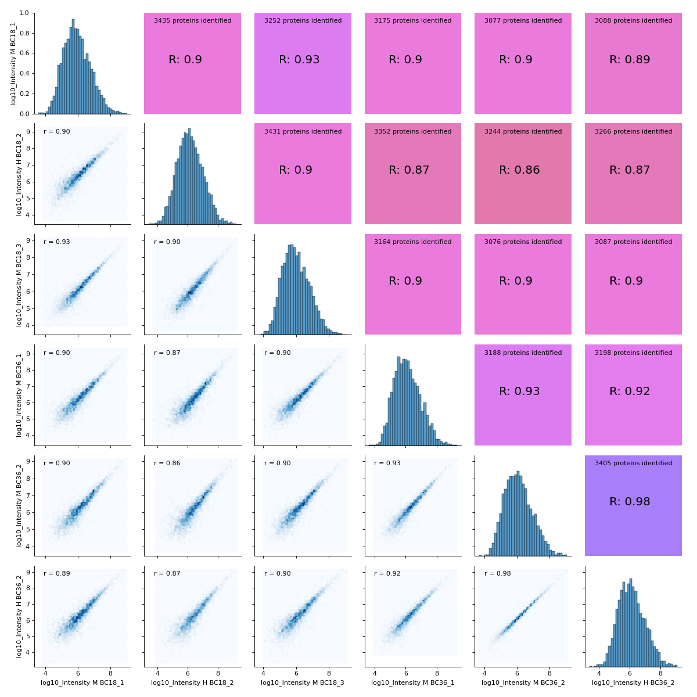
{kind=link}
{kind=link}
{kind=link}
{kind=link}
- autoprot.visualization.correlogram(df, columns=None, file='proteinGroups', log=True, saveDir=None, saveType='pdf', saveName='pairPlot', lowerTriang='scatter', sampleFrac=None, bins=100)[source]¶
Plot a pair plot of the dataframe intensity columns in order to assess the reproducibility.
Notes
The lower half of the correlogram shows a scatter plot comparing pairs of conditions while the upper part shows you the color coded correlation coefficients as well as the intersection of hits between both conditions. In tiles corresponding to self-comparison (the same value on y and x axis) a histogram of intensities is plotted.
- Parameters
df (pd.df) – Dataframe from MaxQuant file.
columns (list of strings, optional) – The columns to be visualized. The default is None.
file (str, optional) – “proteinGroups” or “Phospho(STY)” (does only change annotation). The default is “proteinGroups”.
log (bool, optional) – Whether provided intensities are already log transformed. The default is True.
saveDir (str, optional) – Where the plots are saved. The default is None.
saveType (str, optional) – What format the saved plots have (pdf, png). The default is “pdf”.
saveName (str, optional) – The name of the saved file. The default is “pairPlot”.
lowerTriang ("scatter", "hexBin" or "hist2d", optional) – The kind of plot displayed in the lower triang. The default is “scatter”.
sampleFrac (float, optional) – Fraction between 0 and 1 to indicate fraction of entries to be shown in scatter. Might be useful for large correlograms in order to make it possible to work with those in illustrator. The default is None.
bins (int, optional) – Number of bins for histograms. The default is 100.
- Raises
ValueError – If provided list of columns is not suitable.
- Return type
None.
Examples
You may for example plot the protein intensitites of a single condition of your experiment .
>>> autoprot.visualization.correlogram(prot,mildLogInt, file='proteinGroups', lowerTriang="hist2d")
(Source code, png, hires.png, pdf)
You may want to change the plot type on the lower left triangle.
>>> autoprot.visualization.correlogram(prot,mildLogInt, file='proteinGroups', lowerTriang="hexBin")
(Source code, png, hires.png, pdf)
{kind=link}
{kind=link}
{kind=link}
{kind=link}
- autoprot.visualization.intensityRank(data, rankCol='log10_Intensity', label=None, n=5, title='Rank Plot', figsize=(15, 7), file=None, hline=None, ax=None, **kwargs)[source]¶
Draw a rank plot.
- Parameters
data (pd.DataFrame) – Input dataframe.
rankCol (str, optional) – the column with the values to be ranked (e.g. Intensity values). The default is “log10_Intensity”.
label (str, optional) – Colname of the column with the labels. The default is None.
n (int, optional) – How many points to label on the top and bottom of the y-scale. The default is 5.
title (str, optional) – The title of the plot. The default is “Rank Plot”.
figsize (tuple of int, optional) – The figure size. The default is (15,7).
file (str, optional) – Path to a folder where the resulting sigure should be saved. The default is None.
hline (numeric, optional) – y value to place a horizontal line. The default is None.
ax (matplotlib.axis) – Axis to plot on
**kwargs – Passed to seaborn.scatterplot.
- Return type
None.
Examples
Annotate a protein groups datafile with the proteins of highest and lowest intensity. The 15 most and least intense proteins will be labelled. Note that marker is passed to seaborn and results in points marked as diamonds.
>>> autoprot.visualization.intensityRank(data, rankCol="log10_Intensity", ... label="Gene names", n=15, ... title="Rank Plot", ... hline=8, marker="d")
(Source code, png, hires.png, pdf)

{kind=link}
{kind=link}
- autoprot.visualization.logIntPlot(df, logFC, Int, fct=None, annot=False, interactive=False, sig_col='green', bg_col='lightgray', title='LogFC Intensity Plot', figsize=(6, 6), hover_name=None)[source]¶
Draw a log-foldchange vs log-intensity plot.
- Parameters
df (pd.DataFrame) – Input dataframe.
logFC (str) – Colname containing log fold-changes.
Int (str) – Colname containing the log intensities.
fct (float, optional) – fold change threshold at which an entry is deemed significant regulated. The default is None.
annot (bool, optional) – whether or not to annotate the plot. The default is None.
interactive (bool, optional) – The default is False.
sig_col (str, optional) – Colour for significant points. The default is “green”.
bg_col (str, optional) – Background colour. The default is “lightgray”.
title (str, optional) – Title for the plot. The default is “Volcano Plot”.
figsize (tuple of int, optional) – Size of the figure. The default is (6,6).
hover_name (str, optional) – Colname to use for labels in interactive plot. The default is None.
- Return type
None.
Examples
The logFC Intensity plot requires the log fold changes as calculated e.g. during t-test or LIMMA analysis and (log) intensities to separate points on the y axis.
>>> autoprot.visualization.logIntPlot(prot_limma, "logFC_TvM", ... "log10_Intensity BC4_3", fct=0.7, figsize=(15,5))
(Source code, png, hires.png, pdf)
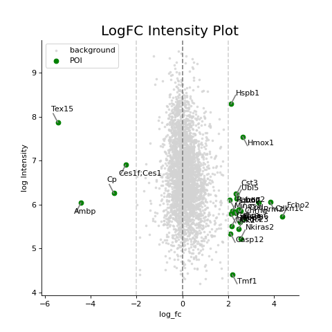Similar to the visualization using a volcano plot, points of interest can be selected and labelled.
>>> autoprot.visualization.logIntPlot(prot_limma, "logFC_TvM", "log10_Intensity BC4_3", fct=2, annot=True, interactive=False, hover_name="Gene names")
(Source code, png, hires.png, pdf)
And the plots can also be investigated interactively
>>> autoprot.visualization.logIntPlot(prot_limma, "logFC_TvM", ... "log10_Intensity BC4_3", fct=0.7, ... figsize=(15,5), interactive=True)
{kind=link}
{kind=link}
{kind=link}
{kind=link}
- autoprot.visualization.meanSd(df, reps)[source]¶
Rank vs. standard deviation plot.
- Parameters
df (pd.DataFrame) – Input dataframe.
reps (list of str) – Column names over which to calculate standard deviations and rank.
- Return type
None.
Examples
Visualise the intensity distirbutions of proteins depending on their total indensity.
>>> autoprot.visualization.meanSd(prot, twitchInt)
(Source code, png, hires.png, pdf)
{kind=link}
{kind=link}
- autoprot.visualization.modAa(df, figsize=(6, 6), retFig=False)[source]¶
Count the number of modifications per amino acid.
- Parameters
df (pd.Dataframe) – The input dataframe. Must contain a column “Amino acid”.
figsize (tuple of int, optional) – The size of the figure. The default is (6,6).
retFig (bool, optional) – Whether to return the figure object. The default is False.
- Returns
fig – The figure object.
- Return type
matplotlib.figure
Examples
Plot pie chart of modified amino acids.
>>> autoprot.visualization.modAa(phos)
(Source code, png, hires.png, pdf)
{kind=link}
{kind=link}
- autoprot.visualization.plotTraces(df, cols, labels=None, colors=None, zScore=None, xlabel='', ylabel='logFC', title='', ax=None, plotSummary=False, plotSummaryOnly=False, summaryColor='red', summaryType='Mean', summaryStyle='solid', **kwargs)[source]¶
Plot numerical data such as fold changes vs. columns (e.g. conditions).
- Parameters
df (pd.DataFame) – Input dataframe.
cols (list of str) – The colnames from which the values are plotted.
labels (list of str, optional) – Corresponds to data, used to label traces. The default is None.
colors (list of colours, optional) – Colours to labels the traces. Must be the same length as the values in cols. The default is None.
zScore (int, optional) – Whether to apply zscore transformation. Must be between 0 and 1 for True. The default is None.
xlabel (str, optional) – Label for the x axis. The default is “”.
ylabel (str, optional) – Label for the y axis. The default is “logFC”.
title (str, optional) – Title of the plot. The default is “”.
ax (matplotlib axis, optional) – Axis to plot on. The default is None.
plotSummary (bool, optional) – Whether to plot a line corresponding to a summary of the traces as defined by summaryType. The default is False.
plotSummaryOnly (bool, optional) – Whether to plot only the summary. The default is False.
summaryColor (Colour-like, optional) – The colour for the summary. The default is “red”.
summaryType (str, optional) – “Mean” or “Median”. The default is “Mean”.
summaryStyle (matplotlib.linestyle, optional) – Style for the summary trace as defined in https://matplotlib.org/stable/gallery/lines_bars_and_markers/linestyles.html. The default is “solid”.
**kwargs – passed to matplotlib.pyplot.plot.
- Return type
None.
Examples
Plot the log fold-changes of 10 phosphosites during three comparisons.
>>> idx = phos.sample(10).index >>> test = phos.filter(regex="logFC_").loc[idx] >>> label = phos.loc[idx, "Gene names"] >>> vis.plotTraces(test, test.columns, labels=label, colors=["red", "green"]*5, ... xlabel='Column', zScore=None)
(Source code, png, hires.png, pdf)
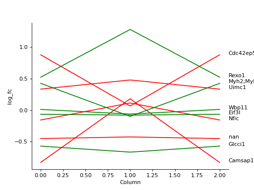
{kind=link}
{kind=link}
- autoprot.visualization.probPlot(df, col, dist='norm', figsize=(6, 6))[source]¶
Plot a QQ_plot of the provided column.
Data are compared against a theoretical distribution (default is normal)
- Parameters
df (pd.DataFrame) – Input dataframe.
col (list of str) – Columns containing the data for analysis.
dist (str or stats.distributions instance, optional, optional) – Distribution or distribution function name. The default is ‘norm’ for a normal probability plot. Objects that look enough like a stats.distributions instance (i.e. they have a ppf method) are also accepted.
figsize (tuple of int, optional) – Size of the figure. The default is (6,6).
- Return type
None.
Examples
Plot to check if the experimental data points follow the distribution function indicated by dist.
>>> vis.probPlot(prot,'log10_Intensity H BC18_1')
(Source code, png, hires.png, pdf)
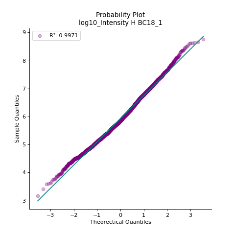In contrast when the data does not follow the distribution, outliers from the linear plot will be visible.
>>> vis.probPlot(prot,'log10_Intensity H BC18_1', dist=stats.uniform)
(Source code, png, hires.png, pdf)
{kind=link}
{kind=link}
{kind=link}
{kind=link}
- autoprot.visualization.sequenceLogo(df, motif, file=None, ST=False)[source]¶
Generate sequence logo plot based on experimentally observed phosphosites.
- Parameters
df (pd.DataFrame) – The dataframe from which experimentally determined sequences are extracted.
motif (tuple of str) – A tuple of the motif and its name. The phosphosite residue in the motif should be indicated by a lowercase character. Example (“..R.R..s…….”, “MK_down”).
file (str) – Path to write the figure to file. Default is None.
ST (bool, optional) – If true, the phoshoresidue will be considered to be either S or T. The default is False.
- Raises
ValueError – If the phosphoresidue was not indicated by lowercase character.
- Return type
None.
Examples
First define the motif of interest. Note that the phosphorylated residue should be marked by a lowercase character.
>>> motif = ("..R.R..s.......", "MK_down") >>> autoprot.visualization.sequenceLogo(phos, motif)
allow s and t as central residue
>>> autoprot.visualization.sequenceLogo(phos, motif, path, ST=True)
- autoprot.visualization.styCountPlot(df, figsize=(12, 8), typ='bar', retFig=False)[source]¶
Draw an overview of Number of Phospho (STY) of a Phospho(STY) file.
- Parameters
df (pd.DataFrame) – Input dataframe. Must contain a column “Number of Phospho (STY)”.
figsize (tuple of int, optional) – Figure size. The default is (12,8).
typ (str, optional) – ‘bar’ or ‘pie’. The default is “bar”.
retFig (bool, optional) – Whether to return the figure. The default is False.
- Returns
fig – The figure object.
- Return type
matplotlib.figure
Examples
Plot a bar chart of the distribution of the number of phosphosites on the peptides.
>>> autoprot.visualization.styCountPlot(phos, typ="bar") Number of phospho (STY) [total] - (count / # Phospho) [(29, 0), (37276, 1), (16460, 2), (4276, 3), (530, 4), (52, 5)] Percentage of phospho (STY) [total] - (% / # Phospho) [(0.05, 0), (63.59, 1), (28.08, 2), (7.29, 3), (0.9, 4), (0.09, 5)]
(Source code, png, hires.png, pdf)
{kind=link}
{kind=link}
- autoprot.visualization.vennDiagram(df, figsize=(10, 10), retFig=False, proportional=True)[source]¶
Draw vennDiagrams.
The .vennDiagram() function allows to draw venn diagrams for 2 to 6 replicates. Even though you can compare 6 replicates in a venn diagram does not mean that you should. It becomes extremly messy.
The labels in the diagram can be read as follows: Comparing two conditions you will see the labels 10, 11 and 01. This can be read as: Only in replicate 1 (10), in both replicates (11) and only in replicate 2 (01). The same notation extends to all venn diagrams.
Notes
vennDiagram compares row containing not NaN between columns. Therefore you have to pass columns containing NaN on rows where no common protein was found (e.g. after ratio calculation).
- Parameters
df (pd.DataFrame) – Input dataframe.
figsize (tuple of int, optional) – Figure size. The default is (10,10).
retFig (bool, optional) – Whether to return the figure. The default is False.
proportional (bool, optional) – Whether to draw area-proportiona Venn diagrams. The default is True.
- Raises
ValueError – If the number of provided columns is below 2 or greater than 6.
- Returns
fig – The figure object. Only returned if retFig is True, else None.
- Return type
matplotlib.figure
Examples
You can specify up to 6 columns containing values and NaNs. Only rows showing values in two columns will be grouped together in the Venn diagram.
>>> data = prot[twitchVsmild[:3]] >>> autoprot.visualization.vennDiagram(data, figsize=(5,5))
(Source code, png, hires.png, pdf)
Only up to three conditions can be compared in non-proportional Venn diagrams
>>> autoprot.visualization.vennDiagram(data, figsize=(5,5), proportional=False)
(Source code, png, hires.png, pdf)
Copmaring up to 6 conditions is possible but the resulting Venn diagrams get quite messy.
>>> data = prot[twitchVsmild[:6]] >>> vis.vennDiagram(data, figsize=(20,20))
(Source code, png, hires.png, pdf)
{kind=link}
{kind=link}
{kind=link}
{kind=link}
{kind=link}
{kind=link}
- autoprot.visualization.visPs(name, length, domain_position=[], ps=None, pl=None, plc=None, pls=4, ax=None, domain_color='tab10')[source]¶
Visualize domains and phosphosites on a protein of interest.
- Parameters
name (str) – Name of the protein. Used for plot title.
length (int) – Length of the protein.
domain_position (list of tuples of int) – Each element is a tuple of domain start and end postiions.
ps (list of int) – position of phosphosites.
pl (list of str) – label for ps (has to be in same order as ps).
plc (list of colours) – optionally one can provide a list of colors for the phosphosite labels.
pls (int, optional) – Fontsize for the phosphosite labels. The default is 4.
ax (matplotlib axis, optional) – To draw on an existing axis
domain_color (str) – Either a matplotlib colormap (see https://predictablynoisy.com/matplotlib/gallery/color/colormap_reference.html) or a single color
- Returns
The figure object.
- Return type
matplotlib.figure
Examples
Draw an overview on the phosphorylation of AKT1S1.
>>> name = "AKT1S1" >>> length = 256 >>> domain_position = [35,43, ... 77,96] >>> ps = [88, 92, 116, 183, 202, 203, 211, 212, 246] >>> pl = ["pS88", "pS92", "pS116", "pS183", "pS202", "pS203", "pS211", "pS212", "pS246"]
colors (A,B,C,D (gray -> purple), Ad, Bd, Cd, Dd (gray -> teal) can be used to indicate regulation)
>>> plc = ['C', 'A', 'A', 'C', 'Cd', 'D', 'D', 'B', 'D'] >>> autoprot.visualization.visPs(name, length, domain_position, ps, pl, plc, pls=12)
(Source code, png, hires.png, pdf)
{kind=link}
{kind=link}
- autoprot.visualization.volcano(df, logFC, p=None, score=None, pt=0.05, fct=None, annot=None, interactive=False, sig_col='green', bg_col='lightgray', title='Volcano Plot', figsize=(6, 6), hover_name=None, highlight=None, pointsize_name=None, highlight_col='red', annotHighlight='all', custom_bg={'alpha': 0.33, 'label': 'background', 'linewidth': 0, 's': 2}, custom_fg={}, custom_hl={}, retFig=False, ax=None, legend=True)[source]¶
Draw Volcano plot.
This function can either plot a static or an interactive version of the volcano. Further it allows the user to set the desired logFC and p value threshold as well as toggle the annotation of the plot. If provided it is possible to highlight a selection of datapoints in the plot. Those will then be annotated instead of all significant entries.
- Parameters
df (pd.DataFrame) – dataframe which contains the data.
logFC (str) – column of the dataframe with the log fold change.
p (str, optional) – column of the dataframe containing p values (provide score or p). The default is None.
score (str, optional) – column of the dataframe containing -log10(p values) (provide score or p). The default is None.
pt (float, optional) – p-value threshold under which a entry is deemed significantly regulated. The default is 0.05.
fct (float, optional) – fold change threshold at which an entry is deemed significant regulated. The default is None.
annot (bool, optional) – whether or not to annotate the plot. The default is None.
interactive (bool, optional) – The default is False.
sig_col (str, optional) – Colour for significant points. The default is “green”.
bg_col (str, optional) – Background colour. The default is “lightgray”.
title (str, optional) – Title for the plot. The default is “Volcano Plot”.
figsize (tuple of int, optional) – Size of the figure. The default is (6,6).
hover_name (str, optional) – Colname to use for labels in interactive plot. The default is None.
highlight (pd.index, optional) – Rows to highlight in the plot. The default is None.
pointsize_name (str or float, optional) – Name of a column to use as emasure for point size. Alternatively the size of all points.
highlight_col (str, optional) – Colour for the highlights. The default is “red”.
annotHighlight (str, optional) – ‘all’ or ‘sig’. Whether to highlight all rows in indicated by highlight or only the significant positions. The default is “all”.
custom_bg (dict, optional) – Key:value pairs that are passed as kwargs to plt.scatter to define the background. Ignored for the interactive plots. The default is {}.
custom_fg (dict, optional) – Key:value pairs that are passed as kwargs to plt.scatter to define the foreground. Ignored for the interactive plots. The default is {}.
custom_hl (dict, optional) – Key:value pairs that are passed as kwargs to plt.scatter to define the highlighted points. Ignored for the interactive plots. The default is {}.
retFig (bool, optional) – Whether or not to return the figure, can be used to further customize it afterwards.. The default is False.
ax (matplotlib.axis, optional) – Axis to print on. The default is None.
legend (bool, optional) – Whether to plot a legend. The default is True.
- Raises
ValueError – If neither a p-score nor a p value is provided by the user.
Notes
Setting a strict logFC threshold is arbitrary and should generally be avoided. Annotation of volcano plot can become cluttered quickly. You might want to prettify annotation in illustrator. Alternatively, use VolcanoDashBoard to interactively annotate your Volcano plot or an interactive version of volcano plot to investigate the results.
- Returns
The figure object.
- Return type
matplotlib.figure
Examples
The function .volcano() draws a volcano plot. You can either provide precalculated scores or raw (adjusted) p values. You can also set a desired significance threshold (p value as well as logFC). You can customize the volcano plot, for instance you can also choose between interactive and static plot. When you provide a set of indices in the highlight parameter those will be highlighted for you in the plot.
>>> vis.volcano(df=prot_limma, logFC="logFC_TvM", p="P.Value_TvM")
(Source code, png, hires.png, pdf)
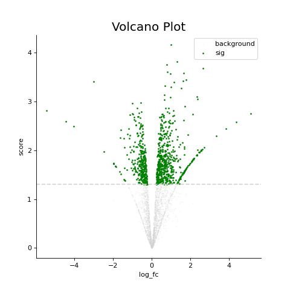The volcano function allows a certain amount of customisation. E.g. proteins exceeding a certain threshold can be annotated and titles and colours can be adapted to your needs.
>>> vis.volcano(df=prot_limma, logFC="logFC_TvM", p="P.Value_TvM", pt=0.01, ... fct=2, annot="Gene names", sig_col="purple", bg_col="teal", ... title="Custom Title", figsize=(15,5))
(Source code, png, hires.png, pdf)
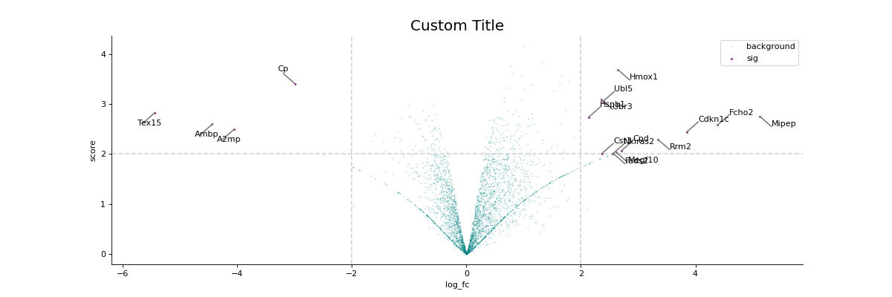Moreover, custom entries can be highlghted such as target proteins of a study.
>>> idx = prot_limma[prot_limma['logFC_TvM'] > 1].sample(10).index >>> vis.volcano(df=prot_limma, logFC="logFC_TvM", p="P.Value_TvM", highlight=idx, annot="Gene names", ... figsize=(15,5))
(Source code, png, hires.png, pdf)
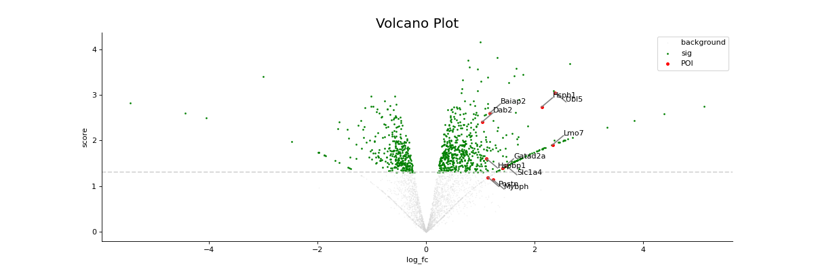Using dictionaries of matplotlib keywords eventually allows a higher degree of customisation.
>>> vis.volcano(df=prot_limma, logFC="logFC_TvM", p="P.Value_TvM", highlight=idx, annot="Gene names", ... figsize=(15,5), highlight_col = "teal", sig_col="lightgray", ... custom_bg = {"s":1, "alpha":.1}, ... custom_fg = {"s":5, "alpha":.33}, ... custom_hl = {"s":40, "linewidth":1, "edgecolor":"purple"})
(Source code, png, hires.png, pdf)
You can also collect the volcano plot on an axis and plot multiple plots on a single figure.
>>> fig, ax = plt.subplots(nrows=2, ncols=1, figsize=(15,10)) >>> vis.volcano(df=prot_limma, logFC="logFC_TvM", p="P.Value_TvM", highlight=idx, annot="Gene names", ... figsize=(15,5), ax=ax[0]) >>> vis.volcano(df=prot_limma, logFC="logFC_TvM", p="P.Value_TvM", highlight=idx, annot="Gene names", ... figsize=(15,5), ax=ax[1]) >>> ax[1].set_ylim(2,4) >>> ax[1].set_xlim(0,4)
(Source code, png, hires.png, pdf)
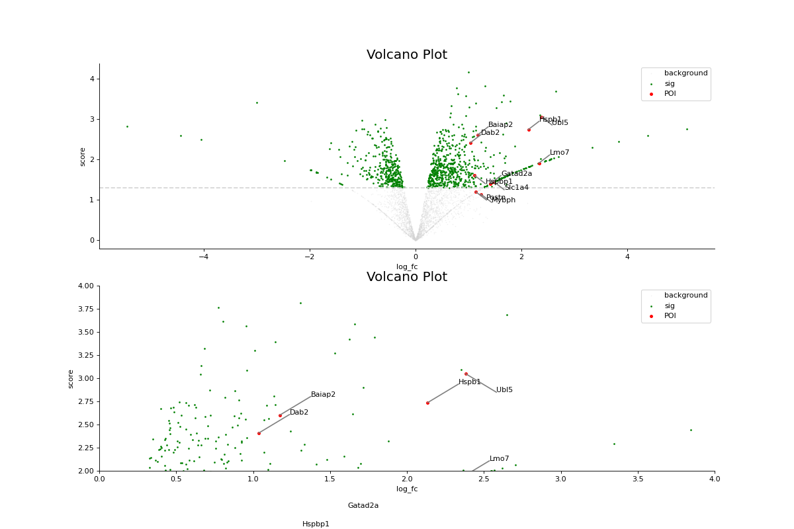If you set the interactive keyword arg to True, you can explore your volcano plots interactively using plotly.
>>> vis.volcano(df=prot_limma, logFC="logFC_TvM", p="P.Value_TvM", interactive=True, hover_name="Gene names", fct=0.4)
{kind=link}
{kind=link}
{kind=link}
{kind=link}
{kind=link}
{kind=link}
{kind=link}
{kind=link}
{kind=link}
{kind=link}
- autoprot.visualization.wordcloud(text, pdffile=None, exlusionwords=None, background_color='white', mask=None, file='', contour_width=0, **kwargs)[source]¶
Generate Wordcloud from string.
- Parameters
text (str) – text input as a string.
exlusionwords (list of str, optional) – list of words to exclude from wordcloud. The default is None.
background_color (colour, optional) – The background colour of the plot. The default is “white”.
mask ('round' or path to png file, optional) – Used to mask the wordcloud. set it either to round or true and add a .png file. The default is None.
file (str, optional) – file is given as path with path/to/file.filetype. The default is “”.
contour_width (int, optional) – If mask is not None and contour_width > 0, draw the mask contour. The default is 0.
**kwargs – passed to wordcloud.WordCloud.
- Return type
None.
Examples
Plot Hello World
>>> autoprot.visualization.wordcloud(text="hello world!", contour_width=5, mask='round')
(Source code, png, hires.png, pdf)
You can also use the extractPDF method to input a pdf text instead of a text string
>>> text = autoprot.visualization.wordcloud.extractPDF('/path/to/pdf') >>> autoprot.visualization.wordcloud(text="hello world!", contour_width=5, mask='round')
{kind=link}
{kind=link}